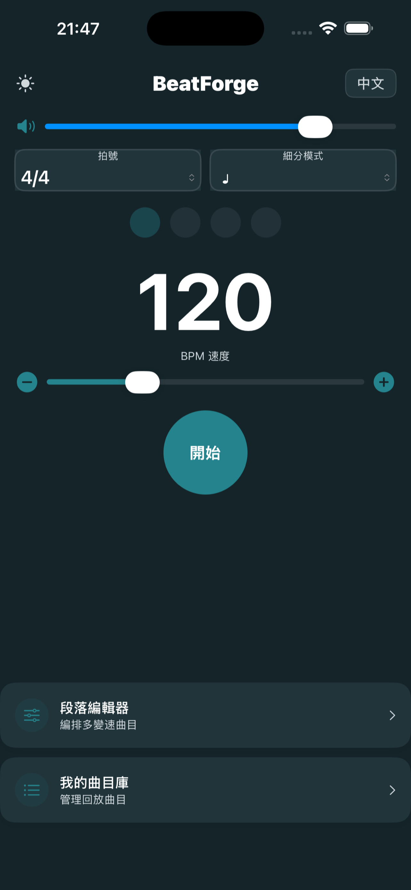
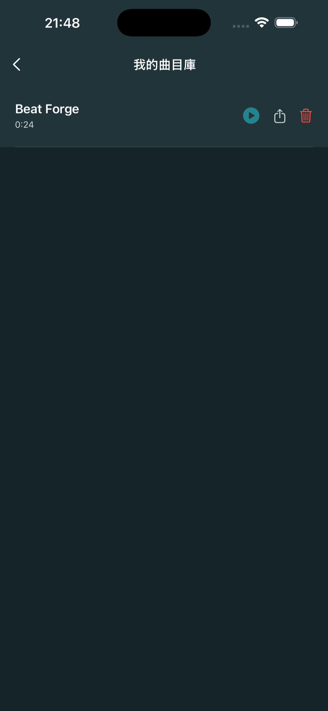

一、什么是预备拍？
预备拍（Count-In）是在正式节拍开始之前的语音数拍，帮助演奏者提前感知即将到来的速度和节奏。BeatForge 的预备拍始终为英文语音数拍（One、Two、Three…），不跟随界面语言切换。
💡 注意：预备拍是自动触发的，不需要手动设置开关，也没有独立的设置按钮。系统会根据当前 BPM 和拍号自动选择最合适的预备拍模式。
二、预备拍的工作方式
根据 BPM 自动适配
- 较高速度（BPM ≥ 80）：
- 四拍子（4/4、2/4）：先半速唱 4 拍（间隔较长），再正速唱 4 拍 → 共 8 拍
- 三拍子（3/4、6/8）：先半速唱 6 拍（间隔较长），再正速唱 6 拍 → 共 12 拍
- 较低速度（BPM < 80）：
三、段落间的预备拍过渡
在段落编辑器中编排了多段曲目后，播放到段落切换时，BeatForge 会自动：
- 计算当前段落剩余时间与下一段落预备拍的时长差
- 在合适的时机自动插入下一段落的预备拍语音
- 确保段落之间的过渡自然顺畅
四、播放页面（PlayerScreen）

从段落编辑器点击 "一鍵播放全曲" 或从曲目库点击播放后，进入播放页面：
- 段落名称（大号文字）— 显示当前正在播放的段落名称。多段曲目会显示 "段落 X / Y"
- 播放状态 — 预备拍阶段显示 "COUNT-IN"，播放中显示 "Playing"，停止显示 "Stopped"
- 小节进度 — 显示 "小節 N / M"，即当前是第几小节 / 共多少小节
- 节拍点阵 — 实时高亮当前拍位。注意：播放中点阵不可点击切换状态
- Play / Stop 按钮（全宽按钮）— 停止时绿色 "Play"（开始播放），播放时红色 "Stop"（停止）
- 返回編輯（文字按钮）— 点击停止播放并返回上一页（编辑页或曲目库）
五、曲目库（Library）

曲目库用于管理已保存的曲目：
- ← 返回按钮（左上角）— 返回上一页
- 曲目列表 — 每条曲目显示名称和总时长
- ▶️ 播放按钮（绿色）— 播放该曲目，跳转到播放页面
- ⬆️ 导出按钮 — 导出为 M4A 音频文件，导出完成后弹出系统分享菜单
- 🗑️ 删除按钮（红色）— 从曲目库删除该曲目
空状态：如果还没有保存任何曲目，会显示音符图标和 "暫無保存曲目" 提示。
💡 导出提示：导出为 M4A 格式，导出后可以隔空投送到电脑或导入到其他音频软件中使用。